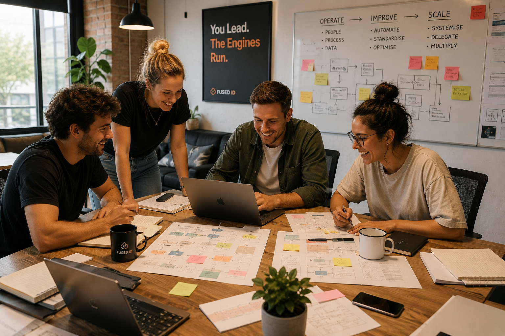
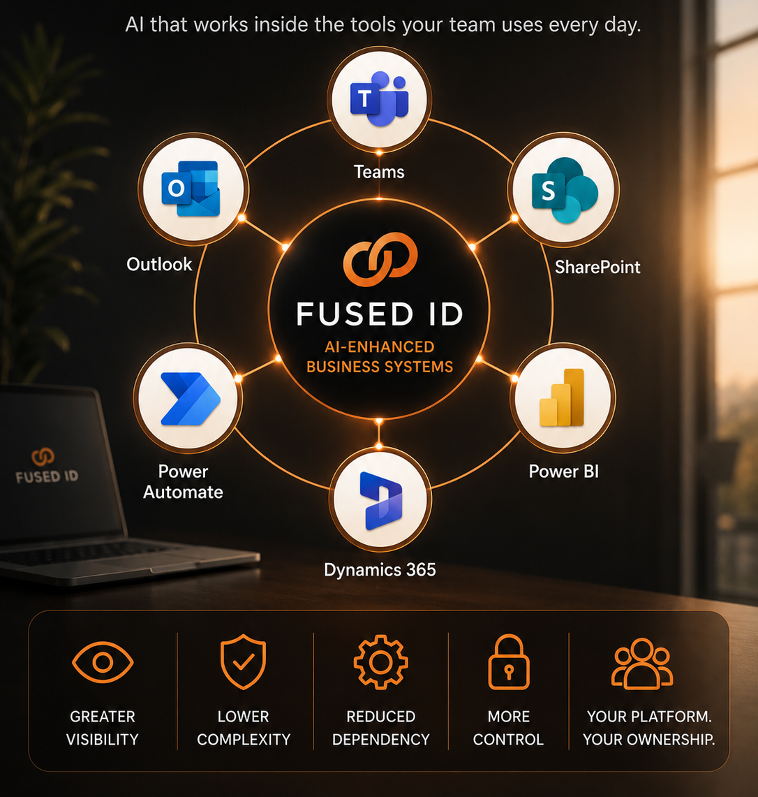

FUSED ID
FUSED ID
AI Is Powerful. The Hard Part Is Making It Useful.
Most businesses already have access to AI. The challenge is applying it in a way that fits how the business actually works — with the right judgement, controls, workflows and human oversight.
FUSED ID combines experienced operators, practical AI and trusted platforms to help businesses turn AI into reliable execution.
Wisdom, Not Just Intelligence
AI can process information quickly, but it does not understand judgement, risk, exceptions or the real-world details of how work gets done.
FUSED ID deployments are shaped by experienced operators who understand the business function itself.
You Stay In Control
AI should support leadership, not replace it. Your team keeps control of the direction, decisions and standards.
We build systems that improve visibility, consistency and execution without handing your business over to a black box.
Built Around Your Business
Every business has its own customers, priorities, processes and vision of success. Generic AI rarely understands that.
We design bespoke deployments around your workflows, tools and operating reality.
Built On Trusted Platforms
Where practical, we build on familiar systems such as Microsoft 365, Teams, Outlook, SharePoint, Power Automate, Power BI and Dynamics 365.
This gives your business visibility, flexibility and long-term control.
AI Should Reduce Work — Not Add Another Thing to Manage
Most AI tools can write, summarise and automate parts of a process. But they do not automatically understand your business, your customers, your risks, or how the work should actually be done.
FUSED ID closes that gap by combining AI capability with experienced operators who understand the work itself. That experience helps shape what the system does, what good looks like, where checks are needed, and when human judgement should step in.
- No internal AI expert required
- Designed around how your business works
- Built with practical business experience behind it
- Managed execution with human oversight
- Improved continuously as your business evolves

From Manual Work to Managed AI Systems
We do not just install tools. We map the work, engineer the system, deploy it into your process, and keep improving it.
1. Discover
We identify bottlenecks, repeatable work and valuable automation opportunities.
2. Design
We design a deployment tailored to your workflows, tools and objectives.
3. Deploy
We integrate the system into your existing business processes.
4. Improve
We monitor outputs, refine performance and improve the system over time.
Built on Three Principles
FUSED ID combines business experience, practical AI and trusted platforms so deployments are useful, understandable and built to last.
Business Expertise
Successful AI deployments need more than technical skill. They need people who understand the work, the risks, the exceptions and what good looks like in the real world.
FUSED ID brings experienced operators into the design process so the system is shaped around practical judgement, not just automation logic.
Practical AI
We focus on AI systems that reduce manual work, improve consistency and support better execution inside real business workflows.
The goal is not to add another tool. The goal is to embed AI where it can help work move faster, cleaner and with fewer things falling through the cracks.
Trusted Platforms
Great AI deployments should feel like a natural extension of your business, not another disconnected system to manage.
Where practical, we build on familiar platforms such as Microsoft 365, Teams, Outlook, SharePoint, Power Automate, Power BI and Dynamics 365.
This gives your business greater visibility, lower complexity and more control — while FUSED ID provides the expertise, deployment and ongoing improvement.
Example AI Deployments
Every deployment is built from the same principle: clear inputs, reliable outputs, human oversight, and measurable business impact.
Sales Acceleration Deployment
Combines prospect research, outreach automation, lead qualification, CRM workflow and reporting.
- ICP and market mapping
- Lead enrichment and segmentation
- LinkedIn and email outreach workflows
- Pipeline visibility and test cycles
Outcome: More qualified conversations and a more predictable pipeline.
Explore Prospecting Engine →Talent Acquisition Deployment
Combines role intake, candidate screening, interview support, ranking and onboarding workflows.
- Role criteria and advert creation
- Candidate intake and document analysis
- AI-assisted interviews and shortlists
- Structured recruitment reporting
Outcome: Faster hiring with less management overhead.
Explore Talent Engine →Knowledge Management Deployment
Combines document intelligence, internal search, AI assistants, source citations and governance controls.
- Policies, SOPs and playbook ingestion
- Natural-language staff Q&A
- Permission-controlled knowledge access
- Conflict detection and content updates
Outcome: Instant access to company knowledge and less dependence on key individuals.
Explore Knowledge Engine →Continuous Improvement Deployment
Combines KPI tracking, root-cause analysis, process reviews, quality systems and improvement workflows.
- Kaizen ticketing and approval workflows
- ROI and impact tracking
- AI-guided root-cause analysis
- ISO-style governance and reporting
Outcome: Better operational performance and measurable improvement over time.
Explore Kaizen Engine →Most AI Projects Fail Because They Don’t Understand the Work
Many AI projects start with good technology but struggle to deliver lasting value. The issue is rarely the AI itself. The issue is that the system does not understand how the business operates, what good looks like, or where human judgement is required.
A successful AI deployment is not just about technology. It needs people who understand the judgement, risk, exceptions and real-world details of how the work is done.
- Business-first implementation
- Experienced operators behind the deployment
- Human oversight where judgement matters
- Checks, escalation paths and governance
- Continuous optimisation over time
- No internal AI team required
Choose the Right Deployment Model
AI Employees and AI Engines still matter. They are the delivery architecture underneath FUSED ID’s custom AI deployments.
Managed AI Deployment
A complete AI solution designed, deployed, monitored and continuously improved by FUSED ID.
Best for: Businesses seeking outcomes without building internal AI capability.
Start a Deployment →AI Employee
An AI-enhanced operator embedded into a defined role or business function.
Best for: Ongoing operational execution where accountability matters.
Meet AI Employees →AI Engine
A specialised AI system focused on a specific business outcome.
Best for: Targeted automation, repeatable work and scalable delivery.
Explore AI Engines →
Built Around Platforms You Already Know
Great AI deployments should feel like a natural extension of your business, not another disconnected system to manage.
Where practical, FUSED ID builds on familiar platforms such as Microsoft 365, Teams, Outlook, SharePoint, Power Automate, Power BI and Dynamics 365. This allows AI to integrate into the tools your team already uses every day.
The result is greater visibility, lower complexity and more control. Your business retains ownership of the platform while FUSED ID provides the expertise, deployment and ongoing improvement.
- Works alongside Microsoft 365
- Leverages Teams, Outlook and SharePoint
- Power Automate, Power BI and Dynamics integrations
- Lower dependency on custom development
- Built for visibility and long-term control
Built for Businesses That Need Outcomes, Not Experiments
SMEs & Mid-Market
For leaders who want more output without adding more headcount or platform sprawl.
Experienced Operators
Deployments are shaped by people who understand the work, not just the technology.
No Technical Overhead
No dashboards to babysit and no internal AI team required.
Continuous Improvement
Human-led optimisation, ISO-style reviews and governance support steady gains.